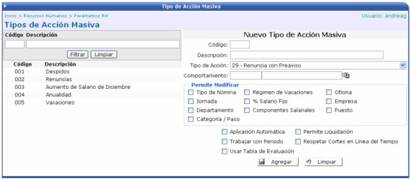
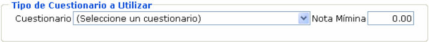

Los tipos de acciones masivas son los formatos que tendrán las acciones de personal, cuando se deseen aplicar masivamente a los empleados. Cuando se definan estos tipos se podrá asignar parámetros para el cálculo de la nómina y se especificará cuales campos se podrán modificar en la acción de personal, dependiendo del tipo de comportamiento seleccionado.
Para crear un tipo de acción masiva se debe de crear un código, una descripción, seleccionar el tipo de acción que va hacer masiva (en este caso se hereda el comportamiento del tipo de acción seleccionado) y el tipo de comportamiento que va a tener (si se desea, no es obligatorio). La información que se despliegue en este campo va a estar definida en el módulo de Administración del Sistema en la opción Parametrización de Aplicaciones / Comportamientos de Acciones Masivas. Es importante mencionar que dependiendo que como se haya parametrizado el comportamiento en el catálogo, así se traerá la información de lo que se permite modificar en la acción y la mostrará como sugerida en esta pantalla ya que el usuario puede activar o desactivar los campos que desee:

Al activar “Trabajar con Periodos” se mostrará el campo de fecha de referencia, donde el usuario podrá escoger entre los siguientes valores: Fecha de Ingreso, Fecha de Anualidad o Fecha de Vacaciones:
Al activar “Usar Tabla de Evaluación” se mostrará el campo de: Tipo de Cuestionario a Utilizar, en donde el usuario podrá escoger un determinado cuestionario y una nota mínima de aprobación:

Al activar “Componentes Salariales”, se mostrará la lista de componentes salariales con el tipo de acción a seguir en la acción para ese componente: